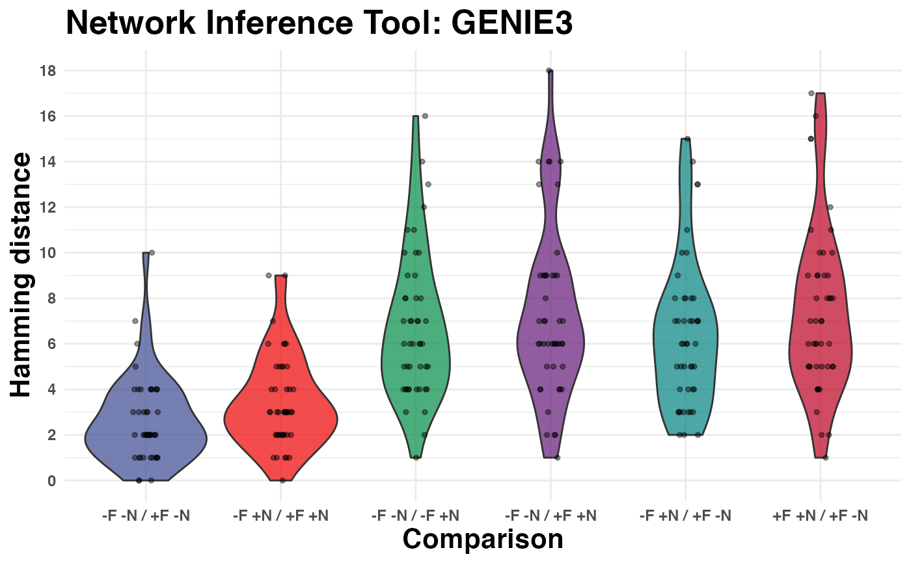

plot_network_benchmark_noise_filtering.RdThis function takes a noise-filtering benchmark result generated with
network_benchmark_noise_filtering as input and visualizes the results as violin-plots.
plot_network_benchmark_noise_filtering( network_benchmark_noise_filtering_result, dist_type, xlab = "Comparison between raw, noise-removed, and quantile normalized networks", title = "", y_ticks = 10 )
| network_benchmark_noise_filtering_result | a benchmark result |
|---|---|
| dist_type | distance method that shall be applied on the binary values for each gene. Available options are:
See Finally, a |
| xlab | x-axis label. |
| title | a character string denoting the plot title. |
| y_ticks | the number of ticks that shall be drawn on the y-axis. |
Hajk-Georg Drost
# Benchmark GENIE3 inferred networks with raw, no_noise, and quantile_norm combinations genie3_49_raw <- as.matrix(read.csv( system.file("data/network_raw_49_placenta_development.csv", package = "edgynode"), row.names = 1)) genie3_49_noNoiseCM_raw <- as.matrix(read.csv( system.file("data/network_noNoiseCM_raw_49_placenta_development.csv", package = "edgynode"), row.names = 1)) genie3_49_qnorm_no_noise_removed <- as.matrix(read.csv( system.file("data/network_qnorm_49_placenta_development.csv", package = "edgynode"), row.names = 1)) genie3_49_noNoiseCM_qnorm <- as.matrix(read.csv( system.file("data/network_noNoiseCM_qnorm_49_placenta_development.csv", package = "edgynode"), row.names = 1)) # Run Benchmark using Hamming distance benchmark_hamming <- network_benchmark_noise_filtering( genie3_49_raw, genie3_49_noNoiseCM_raw, genie3_49_qnorm_no_noise_removed, genie3_49_noNoiseCM_qnorm, dist_type = "hamming", grn_tool = "GENIE3")#> Warning: The matrix provided as input for network_rescale() was coerced into symmetric.#>#> Warning: The matrix provided as input for network_rescale() was coerced into symmetric.#>#> Warning: The matrix provided as input for network_rescale() was coerced into symmetric.#>#> Warning: The matrix provided as input for network_rescale() was coerced into symmetric.#>#>#>#>#>#>#>#>#>#>#>#>#>#>#>#>#>#>#>#>#>#>#>#>#>#>#>#>#>#>#># visualize at results plot_network_benchmark_noise_filtering(benchmark_hamming, dist_type = "hamming", title = "Network Inference Tool: GENIE3")